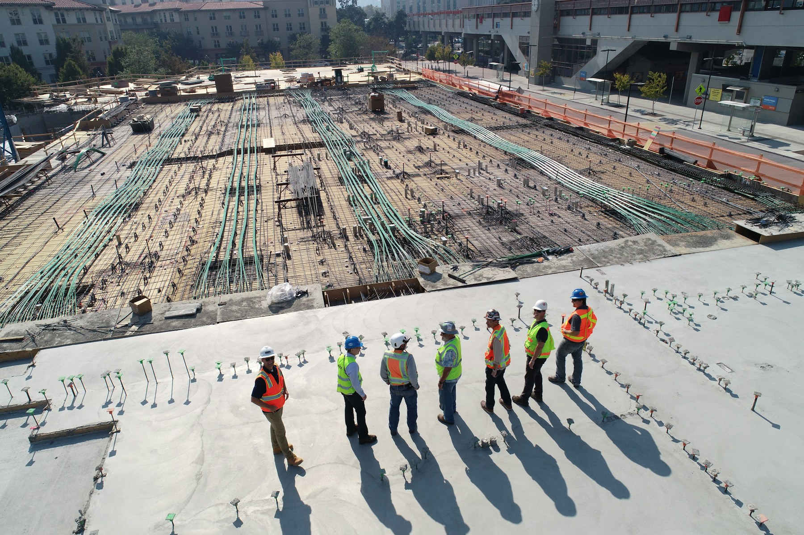

9:41▮▮▮ 4G ▪▪
我的工单
03 标段 · 施工安全员 赵海峰
待整改 2
待提交 1
已闭环 8

GD-20261104-031 · 重大隐患 · 剩余 6h
深基坑临边防护栏杆缺失
K14+380 右幅 5# 承台 · 桥梁一队
整改要求
重大
监理 陈立群 · 11-04 10:43 下发
补齐 32m 临边防护栏杆（上杆 1.2m、立杆 ≤2m），清理坑边 1.5m 内堆土，设置警戒与警示牌，提交整改前后影像。
已签收整改中费用 ¥8,600
待办工单全部 11 条

快捷操作
当前弱网（2G）。照片与说明先写入本地队列，恢复后自动上传；重复提交不会产生重复工单。